MediLink — Manual do Usuário
Plataforma de telemedicina auto-hospedada: consultas por vídeo com registro do áudio, transcrição automática e integração com os sistemas da clínica.
Este manual cobre as três áreas da aplicação web:
| Área | Quem usa | Endereço |
|---|---|---|
| Paciente | Quem é atendido. Não precisa de conta: só do link da consulta. | https://…/sala/consulta-… |
| Médico | Quem atende: lista de consultas, agendamento, sala e transcrições. | https://…/medico |
| Administrador | Quem administra: médicos, sistemas integrados, termo, webhooks e e-mail. | https://…/admin |
As imagens deste manual foram geradas no ambiente de demonstração, com dados fictícios. Clique em qualquer imagem para ampliá-la.
1. Paciente
Esta parte é para quem vai ser atendido por vídeo. Você não precisa instalar nada nem criar conta: basta o link da consulta, que chega por e-mail ou pelo consultório.
1.1 Antes da consulta
- Tenha o link em mãos. Ele é só seu: não compartilhe.
- Se o consultório pediu a confirmação do CPF, tenha o seu CPF à mão.
- Use um navegador atualizado, no computador ou no celular, com boa internet e pouco barulho.
- Na primeira vez o navegador pergunta se o site pode usar câmera e microfone: escolha Permitir. Sem isso o médico não vê nem ouve você.
- Entre alguns minutos antes do horário: quem chega cedo fica na sala de espera.
1.2 Abrir o link
Toque ou clique no link recebido (formato https://…/sala/consulta-…). Se aparecer a mensagem abaixo, o link está errado, foi cortado ao copiar ou a consulta foi cancelada: confira o link na mensagem original ou fale com o consultório.
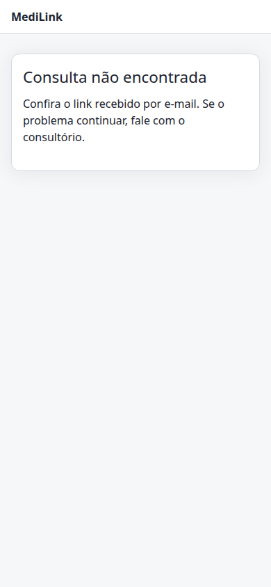
1.3 Confirmar o CPF
Para proteger a sua privacidade, o sistema pode pedir o seu CPF antes de deixar você entrar. A tela mostra o nome do médico, o dia e a hora da consulta.
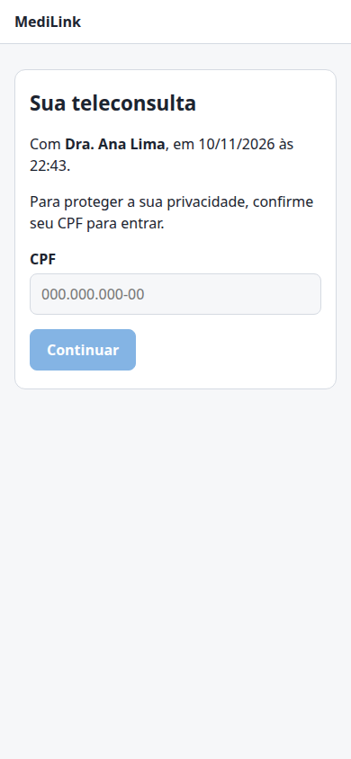
- Digite os 11 números do CPF (com ou sem pontos e traço).
- Toque em Continuar.
Se o CPF não conferir, aparece um aviso e você pode tentar de novo:
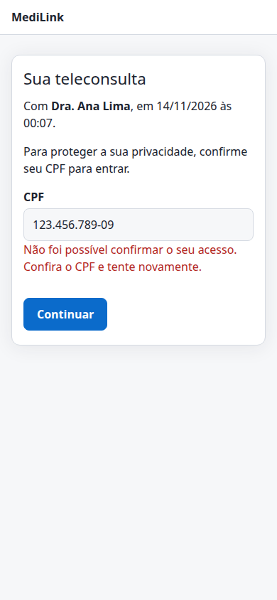
Se o consultório não exigir o CPF, esta etapa não aparece e você vai direto ao termo.
1.4 Ler e aceitar o termo
Toda teleconsulta é registrada. Antes de entrar, você lê o termo de consentimento e decide.
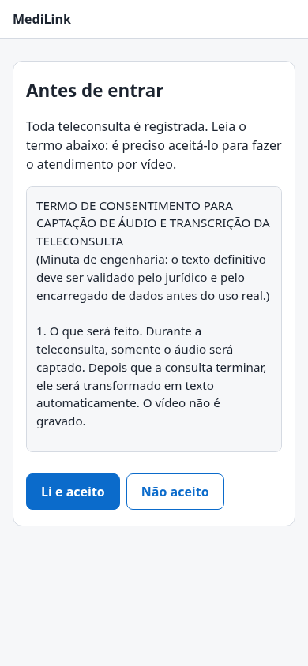
O termo explica, em linguagem simples:
- O que é captado: somente o áudio. O vídeo não é gravado.
- Para que serve: depois da consulta o áudio vira texto, que documenta o atendimento e faz parte do seu prontuário.
- O que acontece com o áudio: assim que o texto estiver salvo, o arquivo de áudio é apagado. Só o texto é mantido.
- Quem acessa: o profissional responsável pelo seu atendimento, na infraestrutura do próprio serviço, sem envio a terceiros.
- Sua escolha: você pode retirar o consentimento a qualquer momento.
| Botão | O que acontece |
|---|---|
| Li e aceito | O consentimento é registrado e você segue para a sala de espera. |
| Não aceito | A consulta por vídeo não pode ser feita, porque toda consulta é registrada. Você vê uma tela explicando isso e pode ler o termo novamente se mudar de ideia. Combine outra forma de atendimento com o consultório. |
Se aparecer “O termo foi atualizado. Recarregue a página para lê-lo.”, recarregue a página e leia a nova versão.
1.5 Aguardar na sala de espera
Depois de aceitar, você fica na sala de espera até o médico liberar a sua entrada.
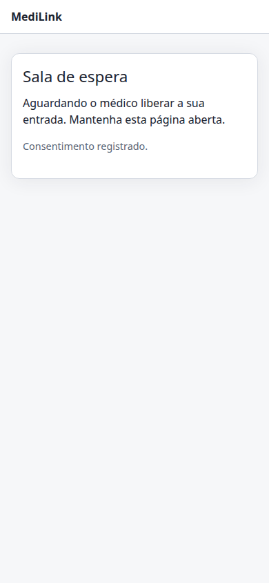
- Mantenha a página aberta. Ela avisa sozinha quando o médico aceitar você; não precisa atualizar.
- Se o celular bloquear a tela por muito tempo, volte à página para continuar.
- O médico só vê você na lista depois que você aceita o termo.
1.6 Durante e depois da consulta
Quando o médico aceita, a sala de vídeo abre. No alto aparece o aviso Consulta registrada, com a sua autorização e o link Retirar consentimento e sair. A barra da sala (ela aparece ao tocar ou mover o mouse sobre o vídeo) tem os controles de microfone, câmera, supressão de ruído, qualidade do vídeo, tela cheia e o botão vermelho de desligar. Não há chat nem compartilhamento de tela: a sala é só entre você e o médico.
- Sair sem encerrar: use o botão vermelho Desligar. Você vê “Você saiu da consulta” e pode tocar em Voltar para a sala enquanto a consulta estiver aberta.
- Retirar o consentimento: toque em Retirar consentimento e sair. A captação do áudio é interrompida e a sua participação é encerrada (tela “Consentimento retirado”). O que já foi registrado é mantido pelo prazo legal.
- Sessão expirada: se você ficar muito tempo parado antes de entrar (cerca de 10 minutos), toque em Confirmar novamente e repita o CPF.
- Quando o médico encerra, a sala fecha; pode fechar a página.
1.7 Perguntas frequentes
| Pergunta | Resposta |
|---|---|
| O vídeo é gravado? | Não. Só o áudio é captado, e é apagado depois que vira texto. |
| Preciso de conta ou aplicativo? | Não. O link e um navegador bastam. |
| Microfone ou câmera não funcionam | Toque no cadeado ao lado do endereço, libere câmera e microfone e recarregue a página. Feche outros aplicativos que usem a câmera. |
| Posso usar o celular? | Sim. As telas se adaptam. Deixe-o apoiado, com a página aberta e a tela ligada. |
| O médico não me aceita | Se aparece “Sala de espera”, aguarde: ele ainda não liberou. Se passar do horário, fale com o consultório. |
| Perdi o link | Peça um novo ao consultório. Cada consulta tem um link único, que deixa de valer um dia depois do horário se a consulta não começou. |
2. Médico
Esta parte é para quem atende pela plataforma. Há duas formas de entrar:
| Forma de entrar | Como é | O que você vê |
|---|---|---|
| Com e-mail e senha | O administrador cadastra você e lhe passa a senha inicial. | Todas as suas consultas, a agenda e as transcrições. |
| Pelo link de uso único | O sistema de agenda/prontuário da clínica gera um link na hora de iniciar a consulta. | Só aquela consulta (sala e transcrição). |
2.1 Entrar com e-mail e senha
Abra o endereço da plataforma (por exemplo https://app.suaclinica.com.br/medico), digite o e-mail cadastrado pelo administrador e a senha, e clique em Entrar.
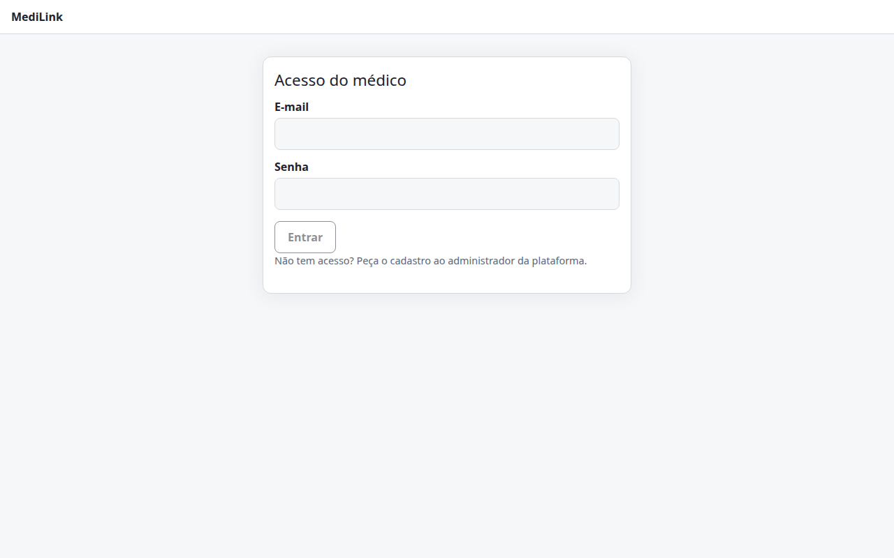
Se o e-mail ou a senha não conferirem, aparece uma mensagem de erro — por segurança, sempre a mesma, tanto para senha errada quanto para e-mail não cadastrado.
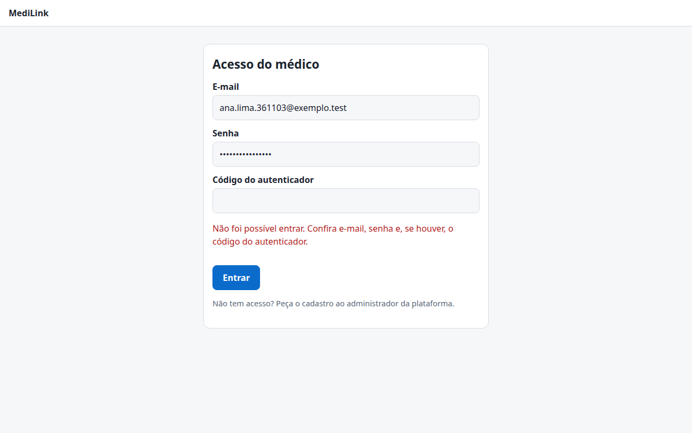
2.2 Autenticador (TOTP), quando exigido
O administrador pode exigir um código do aplicativo autenticador além da senha. No primeiro acesso, depois de digitar e-mail e senha, a tela mostra um segredo para cadastrar no autenticador:
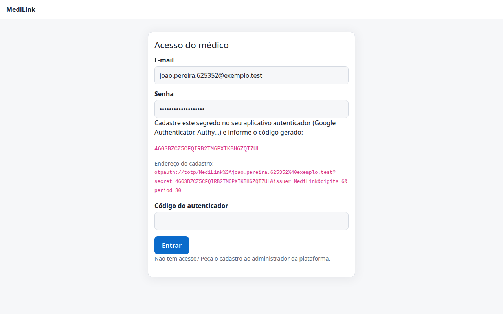
- No celular, abra o autenticador e escolha adicionar conta (tipo “baseado em tempo”, 6 dígitos).
- Informe o segredo mostrado na tela (ou use o endereço
otpauth://…para gerar um QR Code). - Digite o código de 6 dígitos no campo e clique em Entrar.
Nos próximos acessos, informe e-mail, senha e o código do momento. Cada código vale uma vez: se o login falhar, espere o código seguinte. Trocou de celular? Peça ao administrador Refazer cadastro do TOTP.
2.3 Minhas consultas
É a sua tela inicial. O menu lateral dá acesso a Minhas consultas, Agendar consulta e Sair. A lista mostra as consultas só suas, com filtro por situação e paginação (Anterior / Próxima, 20 por página).
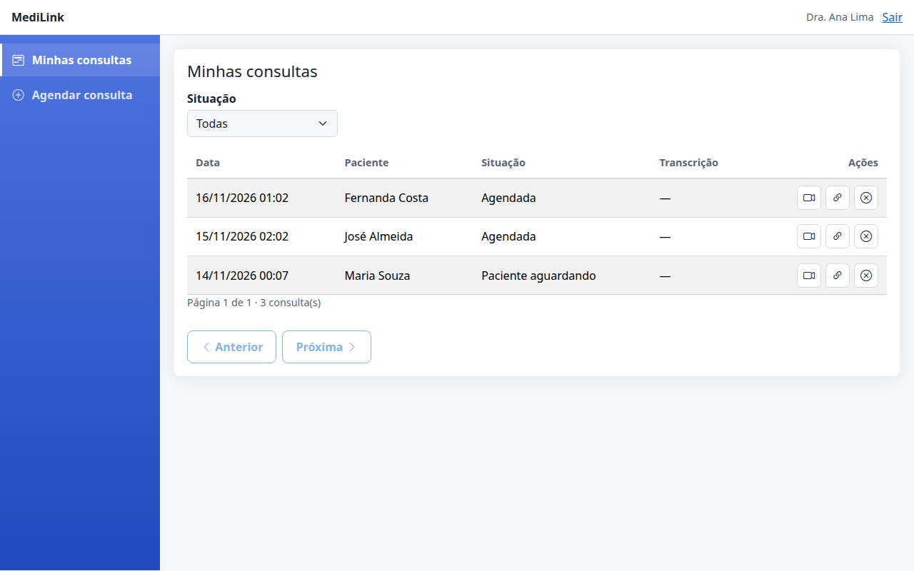
| Coluna | O que mostra |
|---|---|
| Data | Dia e hora marcados. |
| Paciente | Nome do paciente. |
| Situação | Agendada, Paciente aguardando, Em andamento, Encerrada ou Cancelada. |
| Transcrição | — (ainda não se aplica), Em processamento, Disponível, Sem áudio, Falhou ou Expirada. |
As ações de cada linha são ícones (passe o mouse para ver o nome):
| Ícone | Ação | Quando aparece |
|---|---|---|
| 🎥 | Entrar na sala | Consulta agendada, com paciente aguardando ou em andamento. |
| 🔗 | Rever o link do paciente | Idem: reabre o link para reenviar ao paciente (2.4). |
| ✕ | Cancelar consulta | Idem, enquanto a consulta ainda não começou (2.5). |
| 📄 | Ver a transcrição | Transcrição disponível ou em processamento, se a leitura estiver habilitada na plataforma. |
A lista nunca mostra o texto da transcrição nem o CPF: ela só informa a situação. Cada leitura de transcrição é registrada em auditoria.
2.4 Rever o link do paciente
Perdeu a mensagem com o link, ou o paciente não a recebeu? Clique no ícone Rever o link do paciente na linha da consulta. Um aviso mostra o link para você Copiar link e enviar por onde preferir.
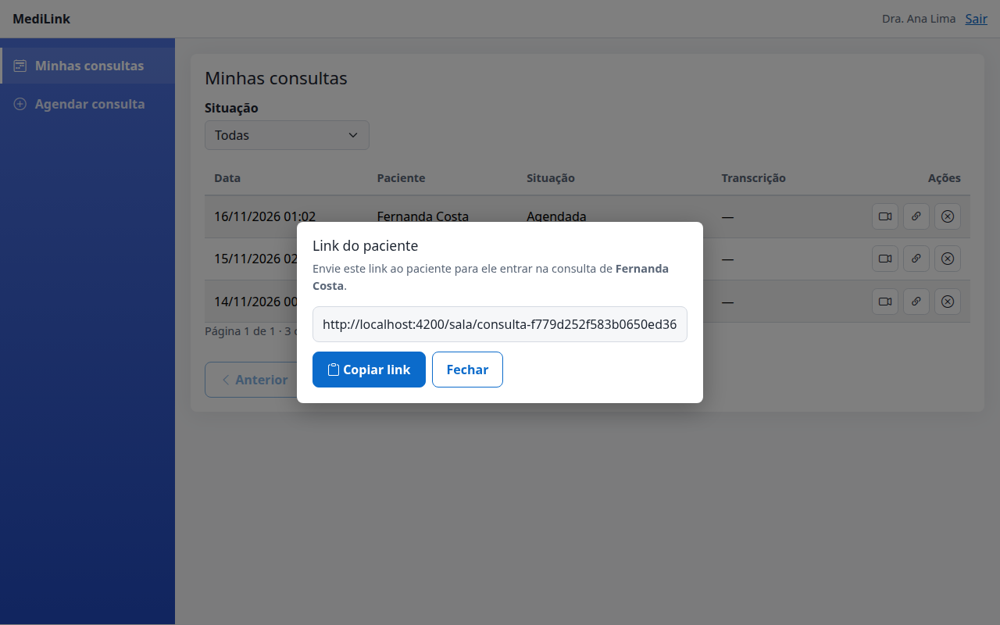
2.5 Cancelar uma consulta agendada
Clique no ícone Cancelar consulta na linha. A plataforma pede a confirmação antes de cancelar:
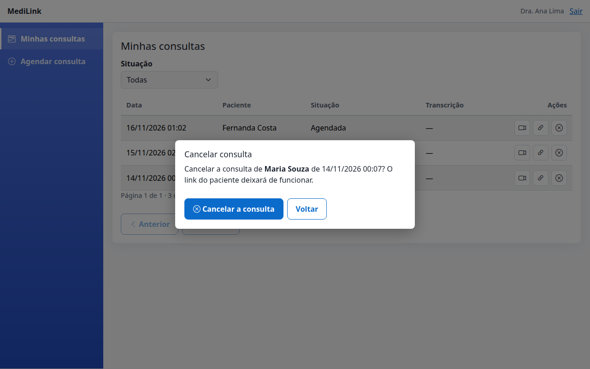
- Cancelar a consulta confirma: o link do paciente deixa de funcionar e a linha passa a mostrar Cancelada.
- Voltar fecha sem cancelar.
- Só é possível cancelar antes de a consulta começar. Se o paciente já entrou, aparece “A consulta já começou e não pode mais ser cancelada.”
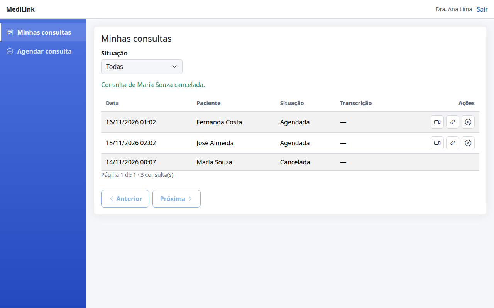
2.6 Agendar uma consulta
Clique em Agendar consulta no menu lateral.
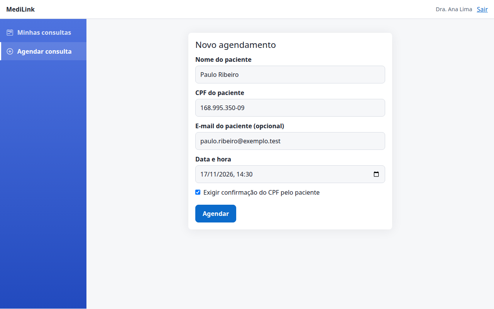
| Campo | Observação |
|---|---|
| Nome do paciente | Obrigatório. |
| CPF do paciente | Obrigatório neste formulário. |
| E-mail do paciente | Opcional. Com ele você pode enviar o link por e-mail com um clique. |
| Data e hora | Obrigatório. Use data e horário futuros. |
| Exigir confirmação do CPF | Marcado: o paciente digita o CPF para entrar. Desmarcado: vai direto ao termo. |
Clique em Agendar. A tela passa a mostrar o link da consulta:
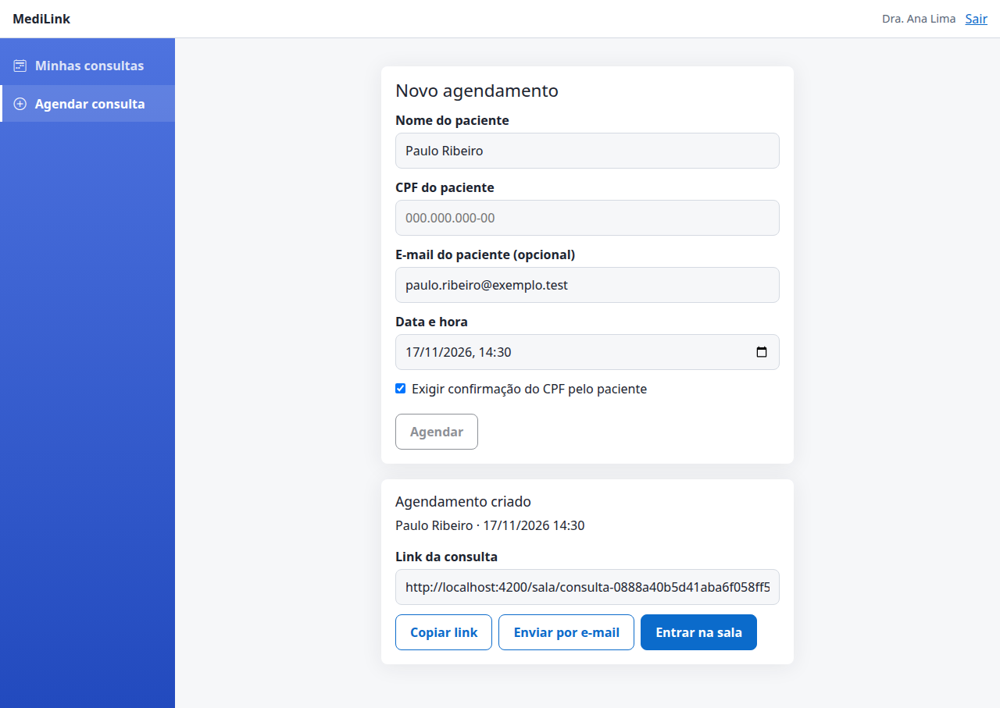
- Copiar link copia o endereço para enviar ao paciente por onde preferir.
- Enviar por e-mail envia o link ao e-mail do paciente (ativo se você o informou; o administrador precisa ter configurado o envio de e-mail).
- Entrar na sala abre a sala dessa consulta.
O link é único e fixo: pode ser reutilizado, e deixa de valer 24 horas depois do horário se a consulta não tiver começado. Em clínicas com sistema de agenda integrado este formulário pode não estar em uso: as consultas já chegam à sua lista.
2.7 Atender e encerrar
Na lista, clique em Entrar na sala (ícone de câmera). A tela da consulta mostra a sala de vídeo e uma barra de estado no alto:
| Mensagem | Significa | O que fazer |
|---|---|---|
| Aguardando o paciente chegar… | Ninguém na espera ainda. | Aguarde. Não é possível aceitar quem ainda não chegou. |
| Paciente aguardando | O paciente confirmou o CPF e aceitou o termo. | Aguarde o botão ficar ativo (“Preparando a sala…”) e clique em Aceitar paciente. |
| Consulta em andamento · Consulta sendo registrada, com o consentimento do paciente | O registro do áudio começou sozinho. | Atenda normalmente; você não precisa fazer nada. |
| Atenção: esta consulta não está sendo registrada (o paciente retirou o consentimento). | A captação parou e o paciente saiu. | Encerre a consulta. Sem consentimento não há consulta por vídeo. |
Para encerrar, use o botão vermelho Desligar da barra da sala e escolha Terminar para todos (encerra para todos; indicado ao final do atendimento) ou Sair da reunião (só você sai). Nos dois casos a plataforma encerra a consulta quando você deixa a sala, e a tela passa a mostrar “Consulta encerrada”, com os botões:
- Ver a transcrição — abre a transcrição (disponível quando o processamento terminar).
- Novo agendamento e Minhas consultas — seguem para as outras telas.
- Reabrir a consulta — aparece por alguns minutos (padrão: 10) se você encerrou por engano ou a conexão caiu. O consentimento é mantido e o áudio já captado continua valendo.
2.8 Ver a transcrição
Na lista, clique no ícone Ver a transcrição. A tela mostra o idioma, a duração e as falas em ordem, cada uma com o papel (Médico ou Paciente) e o instante em que começou.
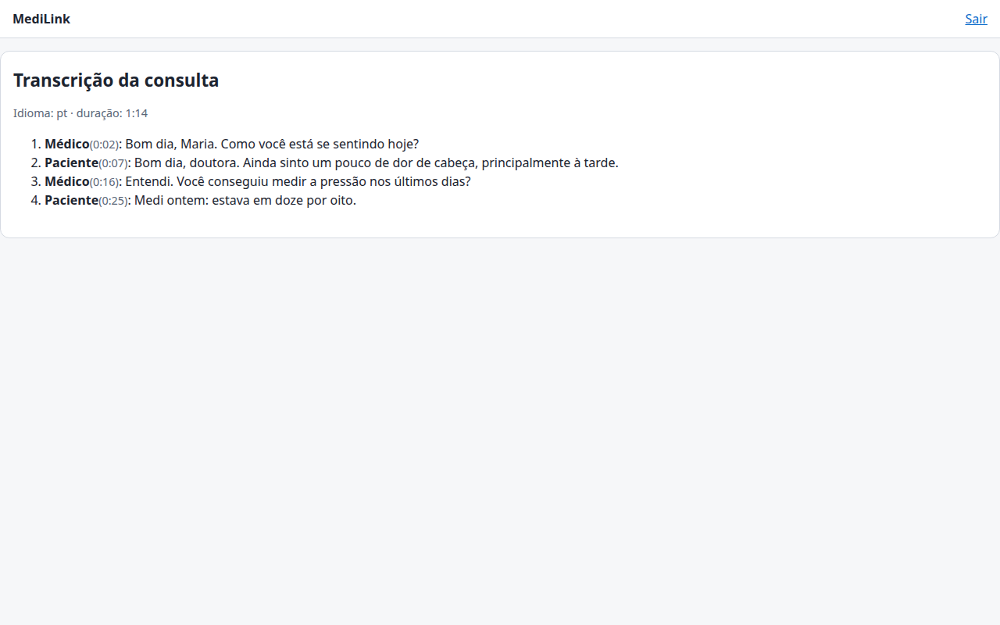
| Mensagem | Significado |
|---|---|
| “A transcrição ainda está sendo gerada…” | Processamento em curso; a página se atualiza sozinha. |
| “A consulta ainda não foi encerrada.” | A transcrição só existe depois do encerramento. |
| “Esta consulta não teve áudio capturado…” | A captação não ocorreu. A plataforma registra o caso e o administrador investiga. |
| “A transcrição falhou e está sob análise.” | O processamento falhou; o administrador pode reprocessar. |
| “…não está mais disponível (prazo de retenção).” | Passou o prazo de guarda definido pela clínica. |
| “A leitura de transcrições por esta plataforma não está habilitada.” | Função desligada no servidor. Procure o administrador. |
2.9 Entrar pelo link de uso único
Em clínicas com sistema de agenda ou prontuário integrado, o sistema entrega a você um link na hora de iniciar a consulta, no formato https://…/medico/acesso#t=…. Clicando nele você entra direto na sala daquela consulta, sem senha.
- O link vale uma vez e por poucos minutos (5, por padrão); só funciona perto do horário da consulta.
- Com o link você vê só aquela consulta. Para ver as outras, use o login com e-mail e senha, se tiver um.
Se o link já foi usado, venceu ou está errado, aparece:
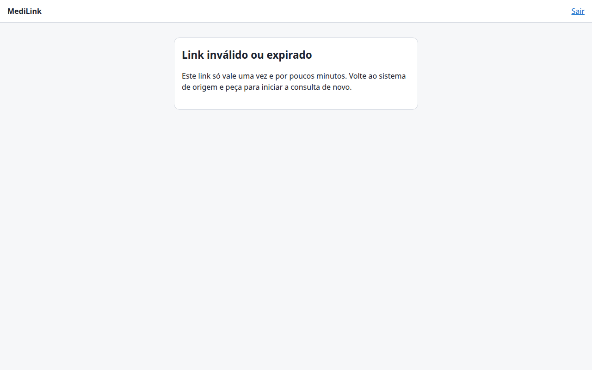
2.10 Problemas comuns
| Problema | O que fazer |
|---|---|
| Não consigo entrar | Confira e-mail e senha. Se bloqueou, aguarde cerca de 15 minutos. Senha esquecida: peça ao administrador para redefinir. |
| Aceitar paciente desabilitado | A sala ainda está sendo preparada. Aguarde alguns segundos. |
| O paciente não aparece | Ele precisa abrir o link, confirmar o CPF e aceitar o termo. Se recusou o termo, a consulta por vídeo não pode ser feita. |
| Não consigo cancelar | A consulta já começou. Cancelamento só antes do início. |
| Encerrei por engano | Clique em Reabrir a consulta em até 10 minutos. |
| A transcrição não aparece | Veja a coluna Transcrição. Em processamento, aguarde (no mínimo ~10 minutos). Sem áudio ou com falha, avise o administrador. |
3. Administrador
Esta parte é para quem administra a plataforma na clínica: cadastra médicos, libera sistemas externos, mantém o termo de consentimento, configura o envio de e-mail e acompanha o funcionamento. A área administrativa não mostra dados de pacientes: só contagens e estados.
Depois de entrar, o menu lateral tem as seções Andamento, Médicos, Sistemas e keys, Termo de consentimento, Webhooks e Envio de e-mail, além de Sair.
3.1 Entrar na administração
Abra https://app.suaclinica.com.br/admin. O acesso exige e-mail, senha e o código do autenticador (TOTP) — sempre.
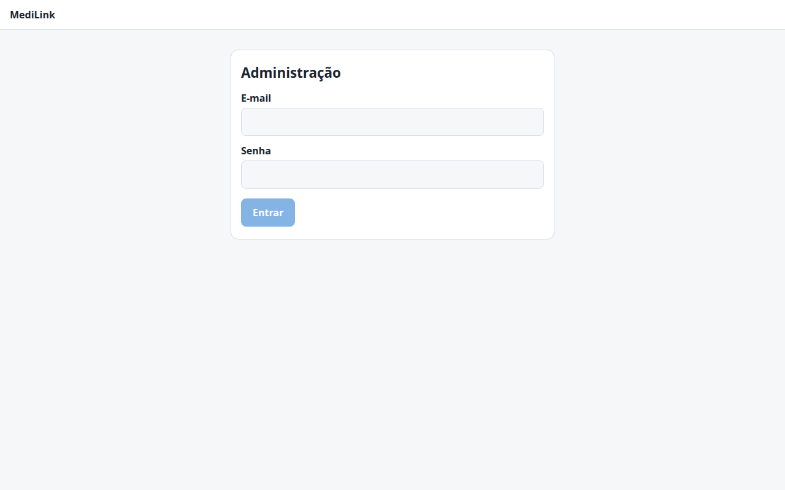
Primeiro acesso. Digite o e-mail e a senha recebidos e clique em Entrar. Como o autenticador ainda não foi cadastrado, a tela mostra o segredo:
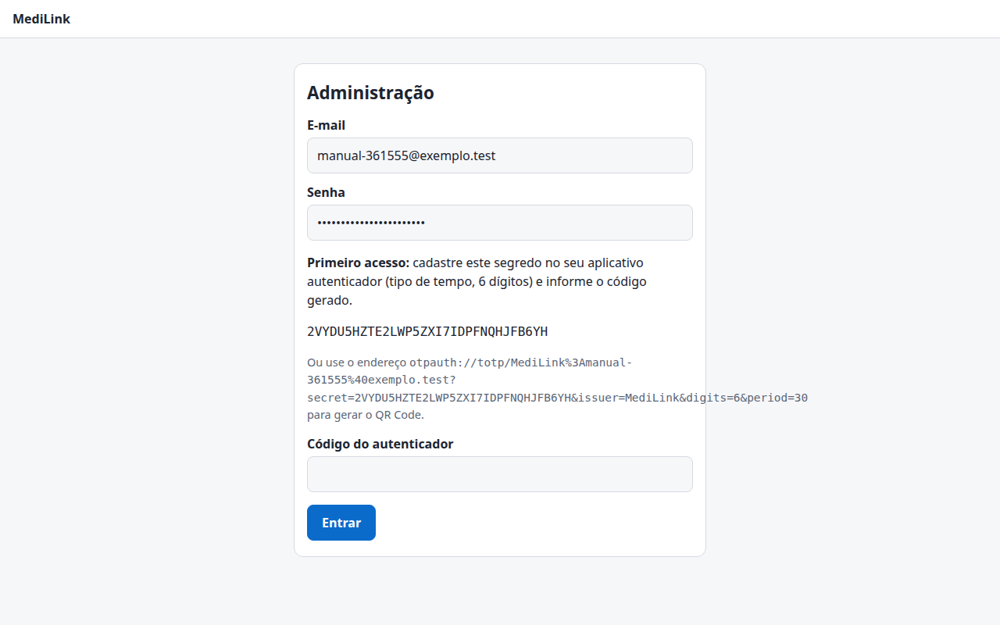
- No autenticador do celular, adicione uma conta baseada em tempo, 6 dígitos.
- Informe o segredo mostrado (ou use o endereço
otpauth://…para o QR Code). - Digite o código de 6 dígitos e clique em Entrar.
| Regra | Detalhe |
|---|---|
| Bloqueio | 5 tentativas erradas bloqueiam a conta por 15 minutos. |
| Mensagem de erro | Sempre a mesma, para não revelar se o e-mail existe. |
| Duração da sessão | 30 minutos, só na memória da página: recarregar (F5) ou fechar a aba exige novo login. |
| Desativação | Se outro administrador desativar a sua conta, o acesso cai na hora. |
3.2 Andamento: gráficos e incidentes
Mostra, em gráficos dinâmicos, o que está acontecendo na plataforma. Escolha o Período (7, 30 ou 90 dias) e clique em Atualizar. Passe o mouse sobre as fatias e barras para ver os valores; a legenda abaixo de cada gráfico traz os números exatos.
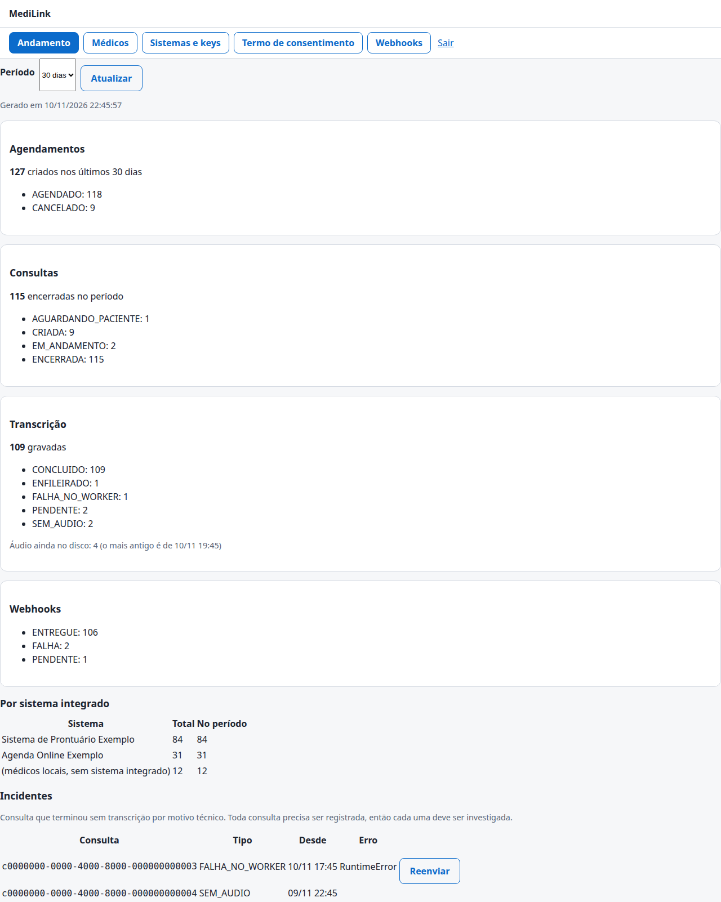
| Quadro | O que mostra |
|---|---|
| Agendamentos | Quantos foram criados no período e a divisão entre agendados e cancelados (rosca). |
| Consultas | Quantas encerraram no período e quantas estão em cada situação (rosca). |
| Transcrição | Transcrições gravadas e a situação dos trabalhos (barras), além de quantos áudios ainda estão no disco e a data do mais antigo. |
| Webhooks | Entregas por situação: entregue, pendente, falha (rosca). |
| Por sistema integrado | Agendamentos de cada sistema, com paginação. “Médicos locais” agendam direto na plataforma. |
| Incidentes | Consultas que terminaram sem transcrição por motivo técnico, com paginação. Cada incidente deve ser investigado. |
Como ler os sinais de alerta
| Sinal | Pode significar | O que fazer |
|---|---|---|
| Áudio ainda no disco crescendo ou antigo | O serviço de transcrição está parado ou com falha. | Avise o responsável técnico. O áudio é apagado sozinho em até 7 dias, mas a transcrição não será gerada. |
Incidente SEM_AUDIO | A captação não ocorreu (queda de conexão, falha do vídeo). | Contate o médico e registre o caso. Não há como recuperar o áudio. |
Incidente FALHA_NO_WORKER / FALHA_NO_ENVIO | O processamento ou o envio falhou; o áudio foi mantido. | Clique em Reenviar (ícone de setas) na linha: o trabalho volta à fila. |
| Webhooks com FALHA | O sistema de destino não respondeu corretamente. | Veja Webhooks. |
3.3 Médicos
Aqui você cadastra e mantém os médicos que entram com e-mail e senha.
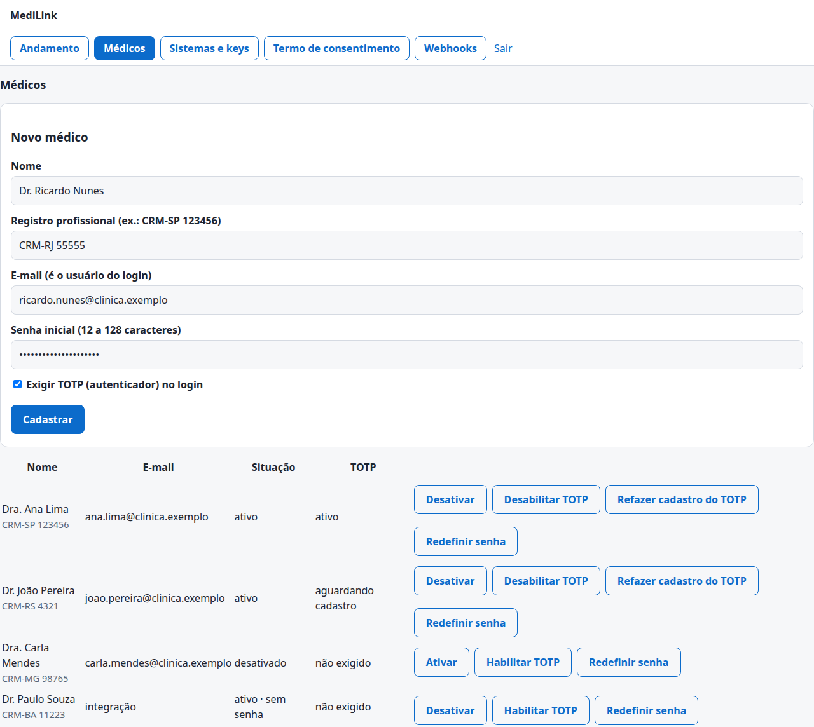
| Campo | Observação |
|---|---|
| Nome | Nome de exibição (aparece para o paciente). |
| Registro profissional | Por exemplo, CRM-SP 123456. |
| É o usuário do login; não pode repetir. | |
| Senha inicial | De 12 a 128 caracteres. Entregue por canal seguro. |
| Exigir TOTP no login | Decisão sua, médico a médico. |
A lista tem campo de busca (nome, e-mail ou registro) e paginação:
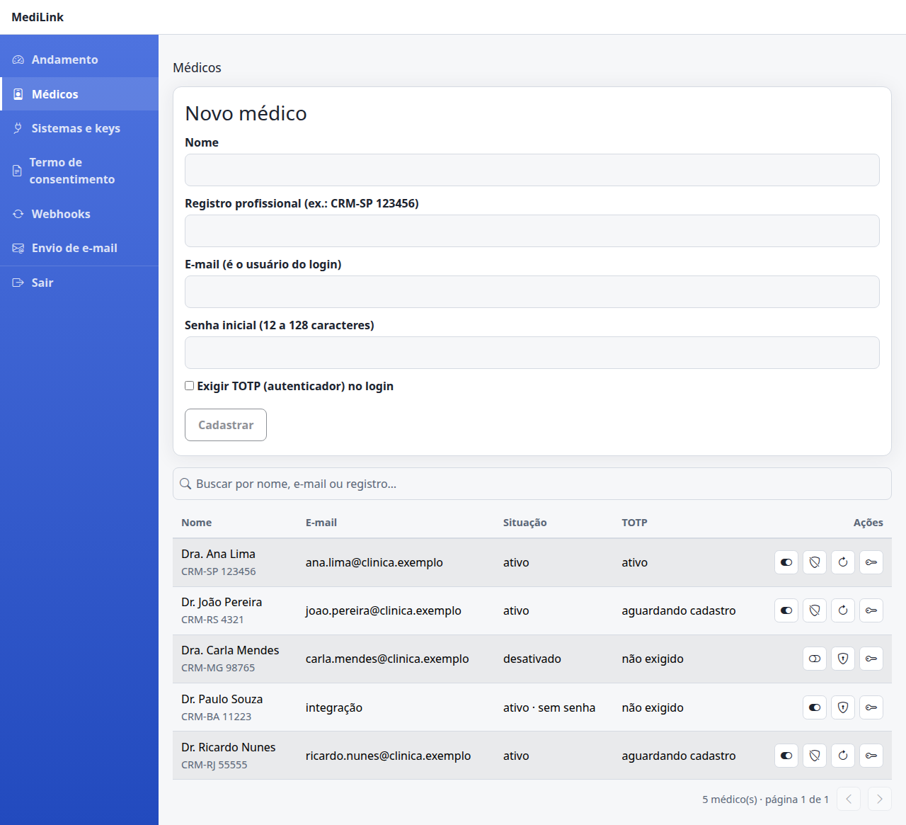
Ações de cada linha (ícones; passe o mouse para ver o nome):
| Ação | Efeito |
|---|---|
| Desativar / Ativar | Desativar corta o acesso na hora, inclusive de quem já estava logado. Os dados são mantidos. |
| Habilitar / Desabilitar TOTP | Liga ou desliga a exigência do código. Ao ligar, o médico cadastra o autenticador no próximo login. |
| Refazer cadastro do TOTP | Zera o segredo atual: use quando o médico trocou de celular. |
| Redefinir senha | Define nova senha (12 a 128 caracteres) e libera bloqueio por tentativas. |
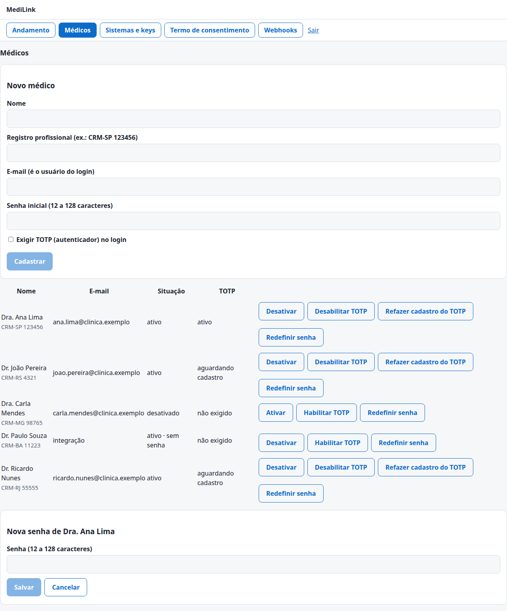
3.4 Sistemas e keys
Um sistema integrado é um programa externo (agenda, prontuário) que cria consultas e recebe transcrições. A lista tem busca e paginação; para cadastrar, digite o nome e clique em Cadastrar.
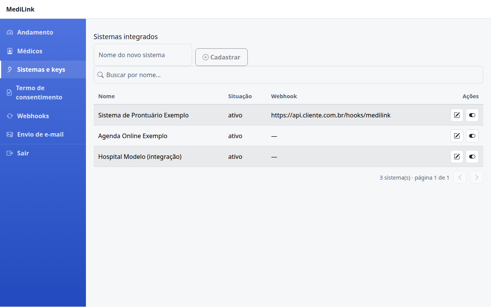
O ícone Abrir / editar (lápis) abre o sistema em uma janela própria, com as API keys e o webhook. A janela só fecha pelos botões Fechar — nunca sozinha —, para você ter tempo de copiar o que precisa.
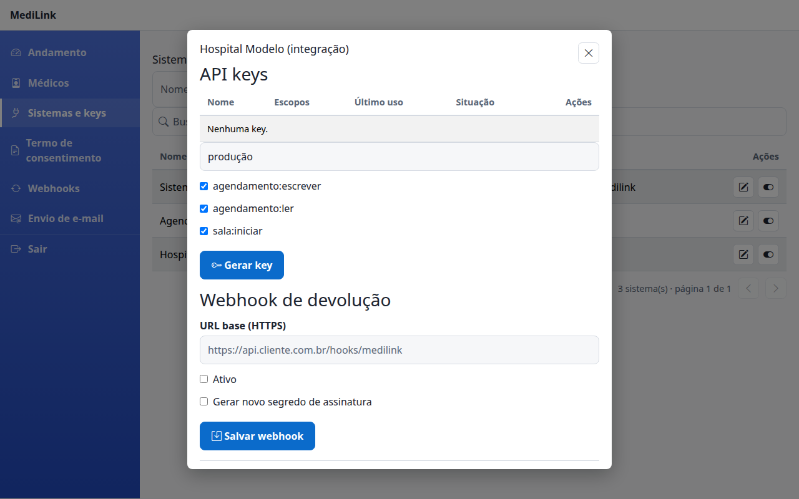
Gerar uma API key
- Digite um nome para a key (por exemplo,
produção). - Marque os escopos:
| Escopo | Permite ao sistema |
|---|---|
agendamento:escrever | Criar, alterar e cancelar consultas. |
agendamento:ler | Consultar o estado de uma consulta (sem dados do paciente). |
sala:iniciar | Pedir o link de uso único para o médico entrar na sala. |
- Clique em Gerar key. A key aparece no topo da janela, destacada, uma única vez:
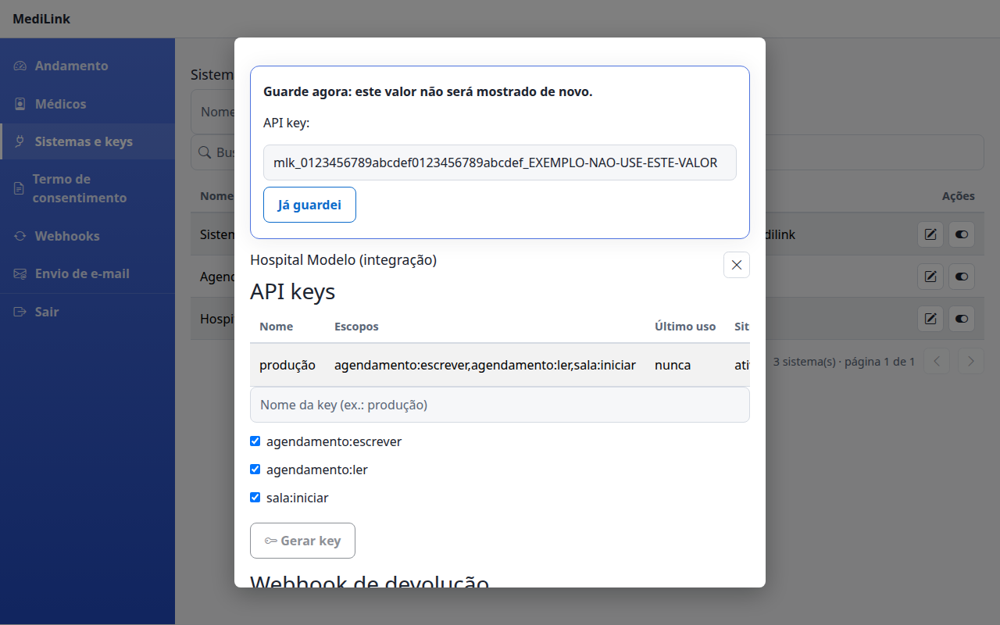
Webhook de devolução. Na parte de baixo da janela:
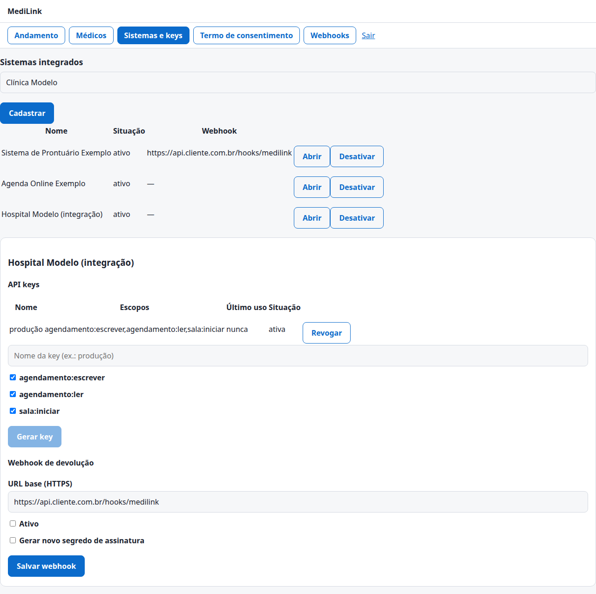
| Campo | O que fazer |
|---|---|
| URL base (HTTPS) | Endereço do sistema que recebe as transcrições. Só HTTPS com certificado válido; endereços internos não são aceitos. |
| Ativo | Liga ou desliga os envios deste sistema. |
| Gerar novo segredo de assinatura | Gera o segredo com que o MediLink assina cada envio, mostrado uma única vez no topo da janela. Troque-o de tempos em tempos. |
3.5 Termo de consentimento
O termo é o texto que o paciente precisa aceitar para a consulta acontecer. Você o mantém aqui, sem reinstalar nada.
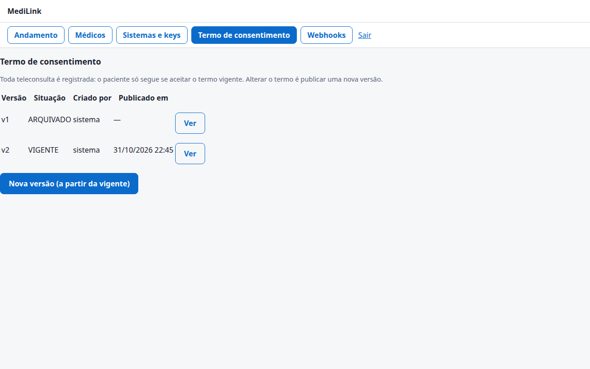
| Situação | Significado |
|---|---|
| VIGENTE | A versão que os pacientes veem agora. Só existe uma. |
| RASCUNHO | Versão em edição; ainda não vale para ninguém. |
| ARQUIVADO | Versão antiga, mantida como prova do que cada paciente aceitou. |
Publicar uma nova versão: clique em Nova versão (a partir da vigente), edite o texto, use Salvar rascunho quantas vezes quiser e, quando pronto, Publicar como vigente.
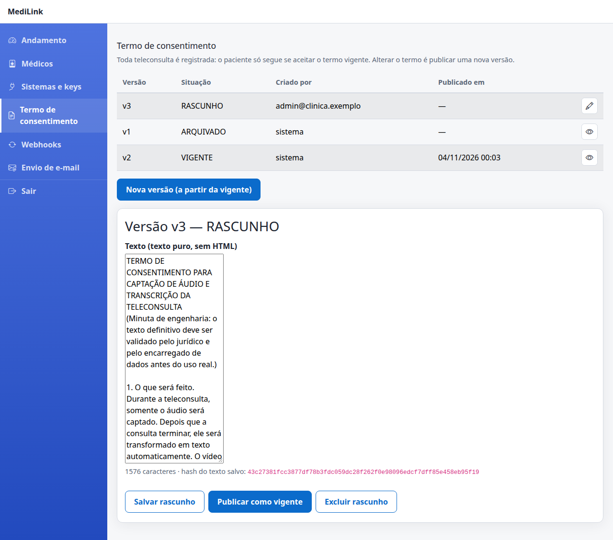
- Versão publicada não muda mais. Cada consentimento fica ligado à versão e ao hash do texto que o paciente de fato leu.
- Se você publicar enquanto um paciente está na tela do termo, o sistema pede que ele recarregue e leia a nova versão.
- Revise o texto com o jurídico e o DPO. O texto que acompanha o sistema é uma minuta. Se a clínica usa webhook, informe no termo que a transcrição é enviada ao sistema do cliente.
3.6 Webhooks
Mostra as entregas de transcrições ao sistema de cada cliente e permite refazê-las. Use o filtro Situação e Atualizar.
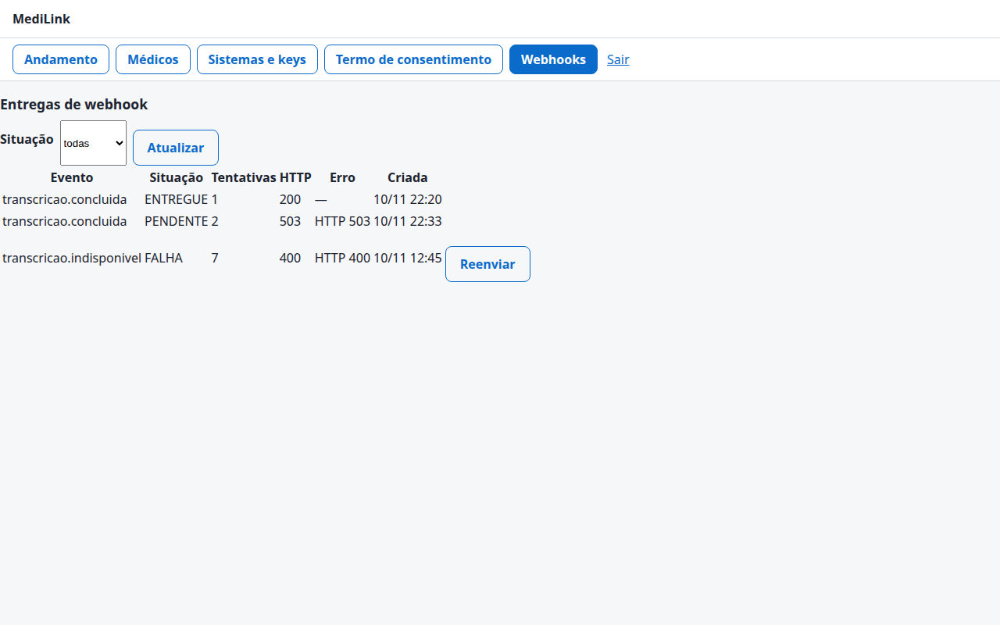
| Coluna | O que mostra |
|---|---|
| Evento | transcricao.concluida (pronta) ou transcricao.indisponivel (não vai existir; o motivo aparece junto). |
| Situação | PENDENTE (aguardando nova tentativa), ENTREGUE ou FALHA. |
| Tentativas / HTTP / Erro | Quantos envios, a resposta do destino e o motivo da falha. |
Em erro temporário do destino, a plataforma repete ao longo de cerca de 1 dia (1 min, 5 min, 30 min, 2 h, 6 h, 24 h). Erros definitivos (ex.: 400) encerram a entrega. Em uma entrega com FALHA, corrija a causa no destino e clique em Reenviar. A transcrição não é apagada enquanto não for entregue.
3.7 Envio de e-mail (SMTP)
Para o botão Enviar por e-mail do médico funcionar, configure aqui o servidor de e-mail da clínica. A configuração vale na hora, sem reiniciar o sistema.
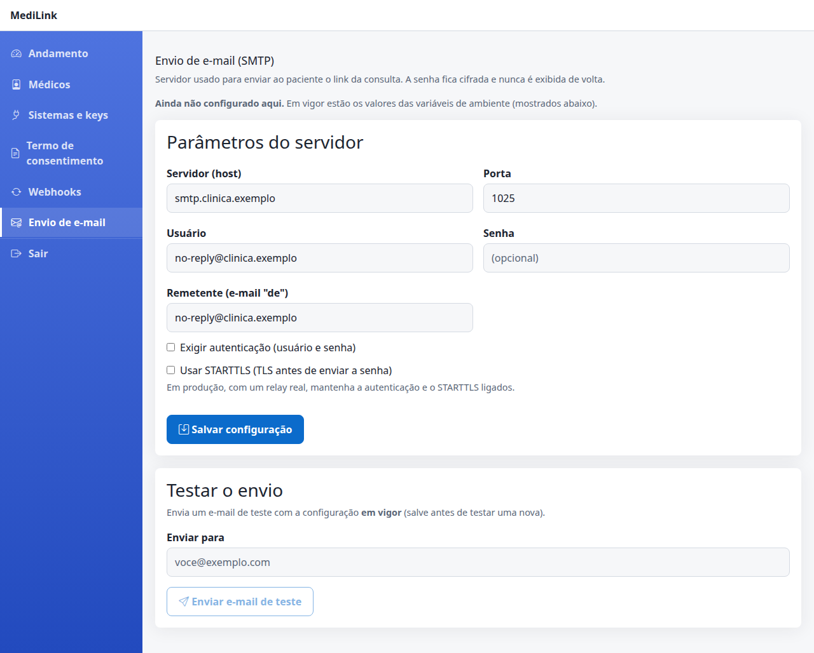
| Campo | Observação |
|---|---|
| Servidor (host) | Endereço do servidor SMTP do seu provedor, por exemplo smtp.seu-provedor.com. |
| Porta | Em geral 587 (STARTTLS) ou 465. |
| Usuário e Senha | Credenciais da conta de envio, se o servidor exigir autenticação. A senha fica cifrada no banco e nunca é reexibida: o campo mostra •••••••• e, deixado em branco, mantém a senha atual. |
| Remetente | O endereço que aparece como remetente, por exemplo no-reply@suaclinica.com.br. |
| Autenticar / STARTTLS | Marque conforme o seu provedor (a maioria exige os dois). |
Depois de Salvar, use a seção Enviar um teste: informe um e-mail seu e clique em Enviar teste. Se o envio falhar, a tela mostra o erro para você ajustar os dados.
3.8 Rotinas recomendadas e segurança
| Quando | O que fazer |
|---|---|
| Todo dia | Abra Andamento: incidentes, áudio no disco e webhooks com falha. |
| Ao contratar | Médicos → cadastrar; senha inicial por canal seguro; TOTP conforme a política. |
| Ao desligar alguém | Médicos → desativar; se era responsável por um sistema, revogue as keys. |
| Troca de celular de um médico | Refazer cadastro do TOTP. |
| Mudança no texto legal | Termo → nova versão → Publicar como vigente. |
| A cada 6–12 meses | Troque as API keys e o segredo de assinatura dos webhooks. |
- Use senha longa e exclusiva (12 a 128 caracteres) e guarde o autenticador.
- Um administrador por pessoa: todas as ações ficam registradas, com quem fez e quando. Novos administradores são criados pela API (
POST /api/admin/administradores). - Saia ao terminar (a sessão já expira em 30 minutos). Não anote keys e segredos em canais abertos.
- A área administrativa nunca mostra dados de pacientes. Se alguém pedir um CPF ou transcrição por aqui, desconfie.
3.9 Problemas comuns
| Problema | O que fazer |
|---|---|
| Não consigo entrar | Confira e-mail, senha e o código (muda a cada 30 s; cada código vale uma vez). Bloqueado: aguarde 15 minutos. |
| Fui “deslogado” | A sessão dura 30 minutos e é só em memória: recarregar a página exige novo login. |
| “Não foi possível cadastrar” um médico | O e-mail já existe ou a senha está fora de 12 a 128 caracteres. |
| O código TOTP de um médico não funciona | Refazer cadastro do TOTP e conferir o relógio do celular. |
| A key foi perdida | Gere outra, atualize o sistema integrado e revogue a antiga. |
| Webhook em FALHA | Veja Erro/HTTP, corrija o destino e use Reenviar. |
| O teste de e-mail falha | Confira host, porta, STARTTLS e as credenciais na tela Envio de e-mail. |
MediLink — manual gerado a partir do ambiente de demonstração, com dados fictícios. As telas podem variar conforme a versão instalada.